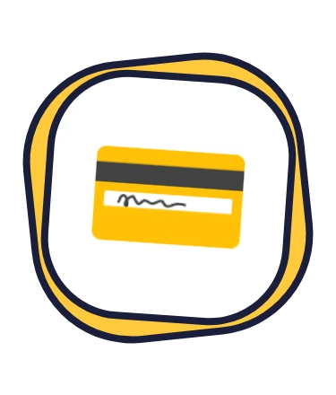

소비 유형 테스트
내 지갑은 언제, 누구를 위해 열릴까?
10문항으로 알아보는 나의 소비 유형
✅ 총 10문항 · 예상 소요시간 약 1분
✅ 소비 유형 5가지 중 하나가 나와요
✅ 같이 쇼핑하면 좋은 유형과 부딪히는 유형도 알려 드려요
📖 돈 쓰는 모습에는 그 사람이 보여요
같은 10만 원을 받아도 쓰는 곳은 사람마다 달라요. 누구는 오래 쓸 물건을 사고, 누구는 맛있는 걸 먹고, 누구는 통장에 넣어 두죠. 어디에 쓸 때 아깝지 않은지를 보면 그 사람이 무엇을 중요하게 여기는지가 보여요. 이 테스트는 절약을 잘하는지 따지지 않아요. 내 지갑이 어떤 순간에 열리는지 알아보는 놀이예요.
같은 돈인데 왜 다르게 느껴질까
길에서 주운 만 원은 쉽게 쓰는데, 일해서 번 만 원은 아깝죠. 금액은 같은데 마음속에서 돈에 이름표를 다르게 붙이기 때문이에요. 행동경제학에서는 이런 습관을 '심리적 회계'라고 불러요.
식비, 용돈, 비상금처럼 머릿속에 칸을 나눠 두는 건 누구나 하는 일이에요. 다만 그 칸을 어떻게 나누고 어느 칸에 후한지는 사람마다 달라요. 그 차이가 소비 유형으로 나타납니다.
다섯 유형을 한 줄로 보면
- 가성비 탐정 — 같은 값이면 더 좋은 걸 찾아내야 마음이 놓여요
- 기분파 플렉서 — 오늘의 나를 기분 좋게 해 주는 데 써요
- 경험 수집가 — 물건보다 기억에 남는 일에 써요
- 통장 요새 지킴이 — 안 쓰고 남아 있는 숫자가 든든해요
- 남에게 쓰는 큰손 — 내 것보다 남의 것을 살 때 더 신나요
결과를 이렇게 읽어보세요
어떤 유형이 돈을 잘 쓰고 못 쓰는지는 정해져 있지 않아요. 가성비를 따지다 시간을 더 쓰는 날도 있고, 기분으로 산 물건이 오래 아끼는 물건이 되기도 하죠.
결과는 내가 돈을 쓰고 나서 덜 후회하는 방향을 알려 주는 힌트로 읽어 주세요. 이 테스트는 재미로 보는 성향 놀이이고, 저축이나 투자에 대한 조언은 담고 있지 않아요.
자주 묻는 질문
결과가 두 유형에 걸쳐 있는 것 같아요.
흔한 일이에요. 평소에는 가성비를 따지다가 여행에서는 아낌없이 쓰는 사람이 많거든요. '이 유형이 나온 정도'가 낮다면 상황에 따라 유형이 바뀌는 사람이에요.
돈을 많이 쓰는 유형이 나오면 안 좋은 건가요?
아니에요. 이 테스트는 쓰는 금액이 아니라 쓰는 방향을 봐요. 어디에 쓸 때 만족하는지를 알면 오히려 불필요한 지출을 가려내기 쉬워요.
커플이나 가족끼리 해 봐도 되나요?
추천해요. 돈 문제로 다투는 건 대개 금액보다 쓰는 기준이 달라서예요. 서로의 유형을 알면 "왜 저기에 쓰지?"가 조금은 이해돼요.
🧾 나올 수 있는 결과 5가지
- 🔍 가성비 탐정 — 같은 값이면 더 좋은 걸 찾아내는 사람
- ✨ 기분파 플렉서 — 오늘의 나에게 아낌없는 사람
- 🎟️ 경험 수집가 — 물건보다 기억에 쓰는 사람
- 🏰 통장 요새 지킴이 — 안 쓰고 남은 숫자가 든든한 사람
- 🎁 남에게 쓰는 큰손 — 내 것보다 남의 것을 살 때 신나는 사람
⚠️ 이 테스트는 재미로 즐기는 콘텐츠이며 전문적인 심리 진단이 아니에요.